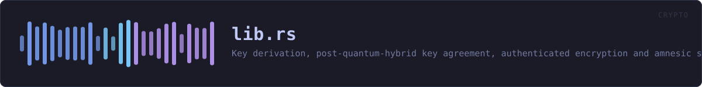

crates/veilvoice-crypto/src/lib.rs
veilvoice-crypto · 200 lines · read the source here · or on GitHub
Key derivation, post-quantum-hybrid key agreement, authenticated encryption and amnesic secret storage for VeilVoice.
What this crate is for
veilvoice_core(../veilvoice-core.html) makes a voice unrecognisable; it does not hide the words, and it is not meant to. When a recording needs to stay secret as well, at rest on disk or in transit to someone else, that is this crate's job.
kdf, Argon2id, for turning a password into a key.hybrid, X25519 + ML-KEM-768, so a recording captured today is not readable by a quantum adversary tomorrow.aead, XChaCha20-Poly1305, with random nonces and authenticated associated data.container, the.veilfile format that ties the three together.amnesia, page-locked, zeroizing, constant-time-comparable secrets.shred, secure erasure, and an honest account of what that is worth on flash storage.privatefile, writing a file that is owner-only from the moment it exists, rather than world-readable until a second syscall tightens it.lock, the application lock: an Argon2id verifier with a rate limit, which protects against casual access and says so rather than pretending to be tamper-proof.
Threat model, stated plainly
This crate protects data at rest and in transit against an attacker who later obtains the file, including one who stores it until quantum hardware exists. It does not protect against an attacker who is already running code as you, or who can read this process's memory: page-locking keeps keys out of the swap file, not out of a debugger. Hibernation writes RAM to disk wholesale and defeats locking entirely.
Example
use veilvoice_crypto::{container, kdf};
// Cheap parameters so the doctest is fast; real callers use the default.
let params = kdf::KdfParams::weak_for_tests();
let sealed = container::seal_with_password(b"pass phrase", b"audio bytes", params)?;
assert_eq!(container::open_with_password(b"pass phrase", &sealed)?, b"audio bytes");
assert!(container::open_with_password(b"wrong", &sealed).is_err());VeilVoice contains no unsafe code at all, including the page-locking in amnesia, which goes through a safe wrapper.
In plain words
This is the locking.
Two separate things use it. Recordings are sealed on your disk so that somebody who takes the disk cannot listen to them, and the app can be put behind a password so somebody who picks up your unlocked computer cannot open it.
Those two passwords are deliberately different. Opening the program should not be the same act as unsealing everything it has ever written.
The maths is chosen to be slow to guess and to still be safe if somebody one day builds a quantum computer. Nothing is sent anywhere; the sealing happens on your machine and the key is made from your password each time.
WHAT THIS FILE CONTAINS
200 lines defining 1 function (0 public), 1 type and 1 constant. Everything below is read out of the source, so it cannot disagree with the code.
The types it owns.
enum Errorline 98 · Everything that can go wrong in this crate.
WHAT CALLS WHAT
The functions this file defines, and the calls between them. An edge means the callee's name appears, called, inside the caller's body. This is a syntactic reading, not a type-resolved one.
The same graph as Mermaid source
%%{init: {"theme":"base","themeVariables":{"background":"#1a1b26","primaryColor":"#1f2335","primaryTextColor":"#c0caf5","primaryBorderColor":"#7aa2f7","secondaryColor":"#16161e","tertiaryColor":"#16161e","lineColor":"#737aa2","textColor":"#c0caf5","mainBkg":"#1f2335","nodeBorder":"#7aa2f7","clusterBkg":"#16161e","clusterBorder":"#2f3549","fontFamily":"ui-monospace, SFMono-Regular, Consolas, monospace","fontSize":"14px"}}}%%
flowchart TD
n_fmt["Error::fmt<br/>line 156"]
click n_fmt href "https://github.com/tilas01/veilvoice/blob/main/crates/veilvoice-crypto/src/lib.rs#L156" "open the source"
classDef helper fill:#1f2335,stroke:#bb9af7,color:#c0caf5
class n_fmt helperThis site loads no third-party script, so it cannot run Mermaid; the diagram above is the same nodes and edges drawn by the generator instead. GitHub renders the source below directly.
ITEMS
| Item | Line | Documentation |
|---|---|---|
VERSION pub const | 89 | Crate version string, surfaced in the About panel. |
Error pub enum | 98 | Everything that can go wrong in this crate. |
Error::fmt fn | 156 |